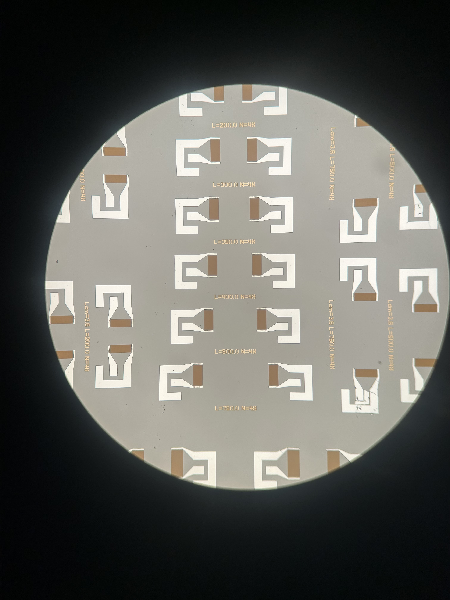
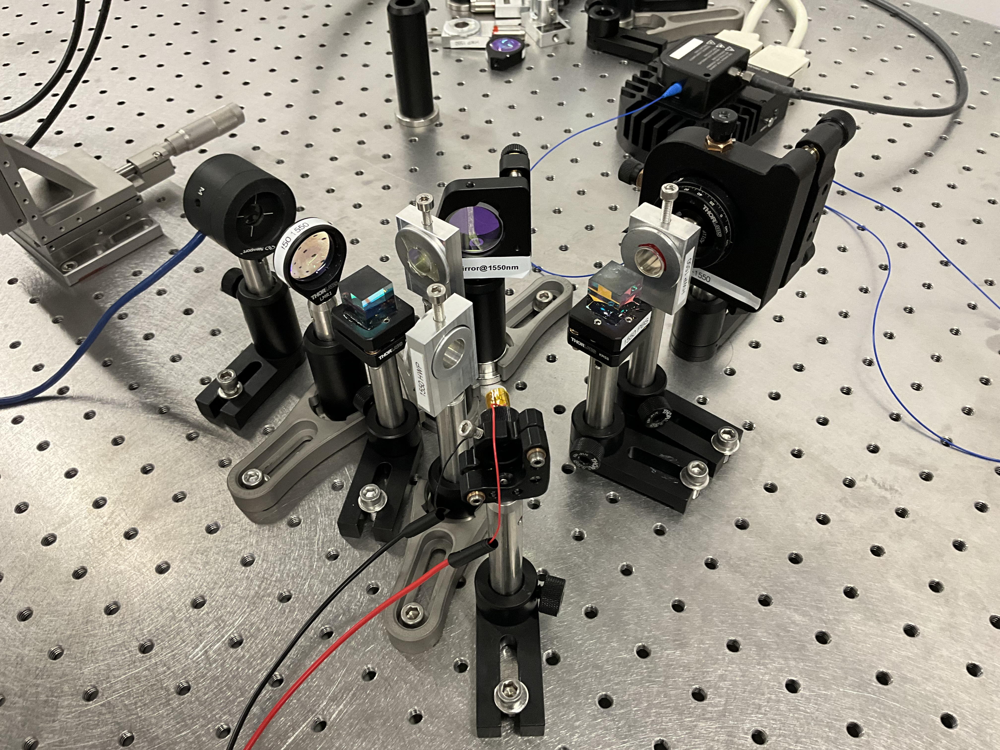

Education
PhD & MS in Optical Sciences
The University of Arizona, Tucson, AZ
Specialization: Quantum Information Science and Engineering
GPA: 3.769
Courses: Interferometry, Quantum Optics, Photonic Integrated Circuits, RF MEMS devices
Integrated M.Sc. in Physics
Pondicherry University, India
Specialization: Optics
GPA: 3.1
Courses: Computational Physics, Laser Optics
Experience
Jan 2024 - Present
Research Assistant
The University of Arizona, Tucson, AZ
- Operate and manage Laser Doppler Vibrometer with Magneto-Optic Kerr Effect.
- Design/simulation of Acoustoelectric devices (Cavities, Transducers, Amplifiers).
- Collaborated with Sandia National Laboratory for studying quantum acoustoelectric devices.
- Nano fabrication of MEMS devices and photonic waveguides.
June 2024 - Aug 2024
Teaching Assistant
The University of Arizona, Tucson, AZ
- Conducted lectures and labs for Mechanics and Electronics courses.
Past Role
Cybersecurity Analyst
Positka FSI Solutions, Chennai, India
- Led incident response, reducing resolution time by 40%.
- Enhanced SIEM (Incident management) monitoring and developed security SOPs.
Projects



Repositories & Coursework


Skills
Research
Technical
Optics Quiz
Test your knowledge of optical sciences. Select a difficulty to begin.